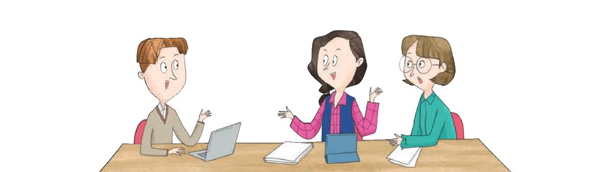
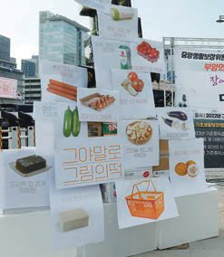

사람들의 욕구는 끝이 없는데, 나눌 수 있는 자원은 한정되어 있습니다. 그래서 ‘누구에게, 무엇을 기준으로, 얼마나’ 나눌지가 중요해집니다. 장학금 한 자리를 두고 고민해 본 뒤, 롤스와 노직이 ‘공정한 분배’에 대해 내놓은 서로 다른 답을 직접 체험하며 비교해 봅시다.
고등학교에서 어떤 학생에게 장학금을 줄지 논의하고 있습니다. 선생님 세 분의 의견이 모두 다릅니다. 내가 이 회의에 참여했다면 어느 의견에 손을 들겠는가? 먼저 하나를 골라 봅시다.

롤스는 정의의 본질을 공정성으로 해석하면서 절차의 공정성을 강조했습니다. 공정한 절차를 통해 합의된 것이라면 정의롭다고 본 것입니다. 그래서 정의의 원칙을 합의하기 위한 공정한 절차로 원초적 입장이라는 가상적 계약 상황을 설정했습니다.
베일을 벗으면 이 네 가지가 무작위로 정해집니다. 그 전에, 우리 사회가 따를 원칙을 하나 골라 봅시다. 한번 고르면 바꿀 수 없습니다.
계약 당사자들은 자신이 사회적 약자가 되는 위험한 상황을 회피하려 하기 때문에, 다음 원칙에 합의합니다.
노직은 개인의 자유를 최우선의 권리라고 보는 자유 지상주의의 관점에서, 정의란 개인의 소유권을 보장해 주는 것이라는 소유 권리론을 주장했습니다. 재화의 취득과 양도의 절차가 정당하다면, 그 소유물에 대해 개인은 절대적인 권리를 갖는다는 것입니다.
정당한 노동을 통해 얻은 소유물에 대해 소유 권리를 가진다.
자유롭게 양도한 소유물에 대해 정당한 소유 권리를 가진다.
취득과 양도의 과정에서 부정의가 발생한다면 이를 교정해야 한다.
아래 소유물마다 노직의 세 원칙 중 어디에 해당하는지 골라 봅시다.
소유권이 그만큼 중요하다면, 국가는 무엇을 해야 하는가? 노직은 국가가 개인의 소유를 절도·사기로부터 보호하고 국방을 담당하는 역할 정도만 해야 한다고 주장했습니다.
두 사람 모두 개인의 자유를 소중히 여기지만, 분배를 바라보는 눈은 크게 다릅니다.
소득과 자산의 격차가 점점 커지자, 정부가 세금을 더 걷어 형편이 어려운 사람들을 지원하는 복지 예산을 늘리기로 했다고 해 봅시다. 롤스와 노직은 각각 어떻게 평가하겠는가? 먼저 예상해 본 뒤 카드를 열어 봅시다.
“소득 격차가 커지면서 사회적 약자의 삶이 어려워지고 있습니다. 정부는 내년부터 세금을 더 걷어, 형편이 어려운 가정을 지원하는 복지 예산을 크게 늘리겠습니다.”

각 주장을 읽고 누구의 생각인지 골라 봅시다.
‘공정한 분배’라는 같은 질문에서 출발해, 롤스와 노직의 길이 어디서 갈라지는지 따라가 봅시다.
정의의 원칙에 합의하기 위한 공정한 절차(가상적 계약 상황)
재능·출신·성별·사회적 상황을 모름 → 운(우연성)의 개입 차단
제1원칙 우선 · 최소 수혜자 배려 → 복지에 긍정적
정의 = 개인의 소유권 보장 (자유 지상주의)
취득·양도 절차가 정당하면 소유물에 절대적 권리
소유 보호(절도·사기)와 국방만 → 복지 확대에 부정적